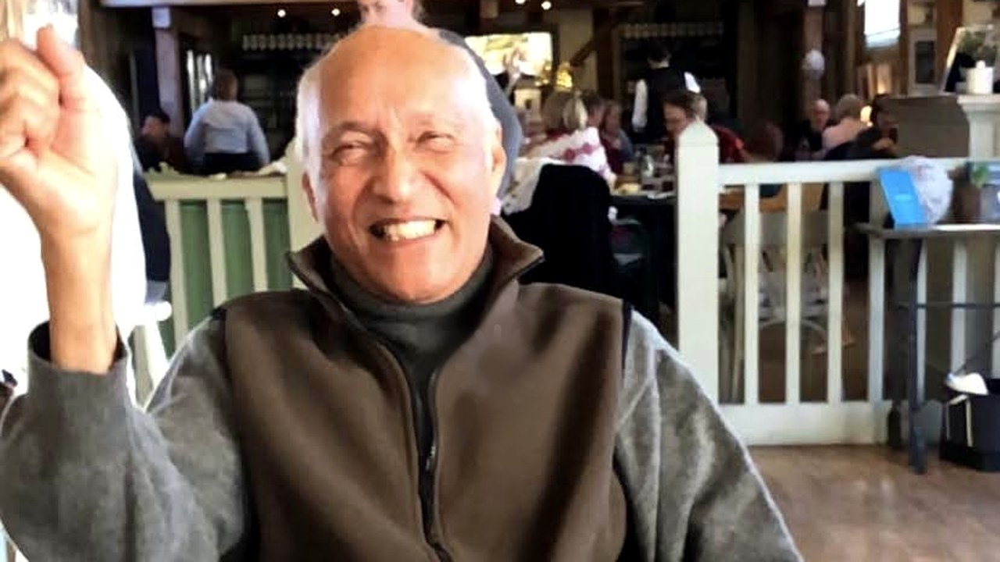

A private page · the de Souza family

BORN 4 FEBRUARY 1943 · BANGALORE, INDIA · 83 YEARS OLD
The record
Typed in once, in four minutes, with no camera. This is the part of the page that exists before any film does.
The answers
The first one is the place to start — it is the shortest and the easiest.